私たちについて
野江ミルクセンターは大阪市城東区野江で牛乳屋を営んでおります。
地域の皆様に寄り添い、温かみのあるスタイルで新鮮な牛乳をお届けしています。
配達範囲は、守口市・大阪市城東区・都島区・旭区・鶴見区・東成区・北区・中央区です。まずはお気軽にお問い合わせください。
取り扱い商品
カードをタップすると詳細が開きます。
大山乳業
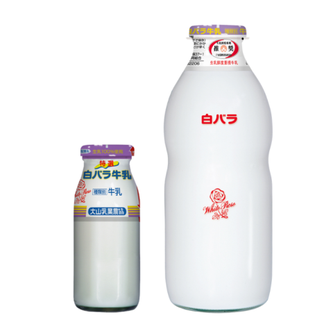
特選白バラ牛乳
（宅配専用）
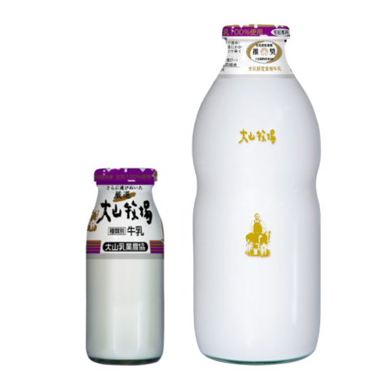
厳選大山牧場
（宅配専用）
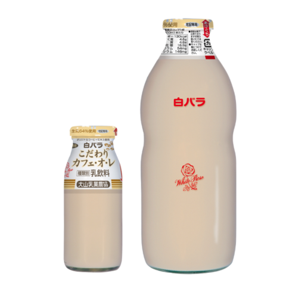
白バラこだわり
カフェ・オ・レ
（宅配専用）
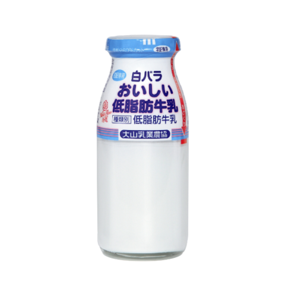
白バラおいしい
低脂肪牛乳
（宅配専用）
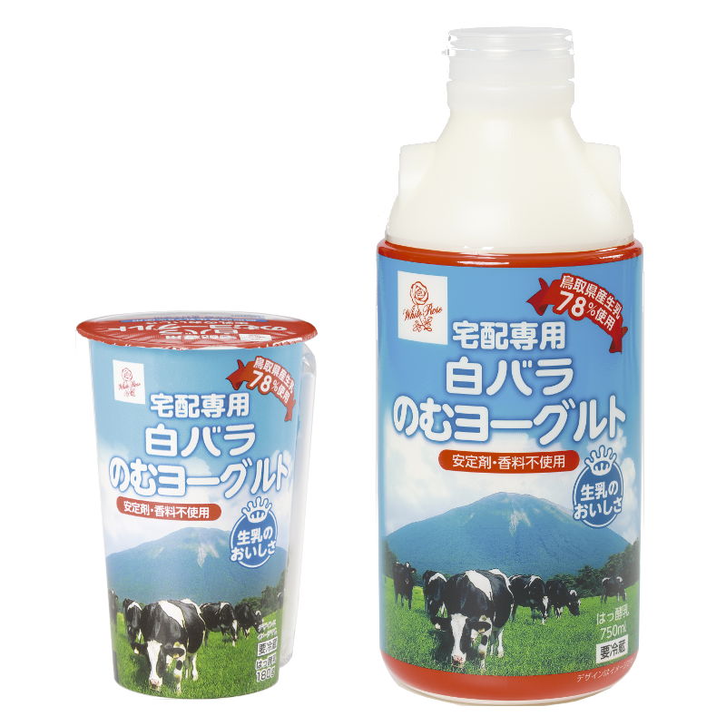
白バラのむヨーグルト
（宅配専用）
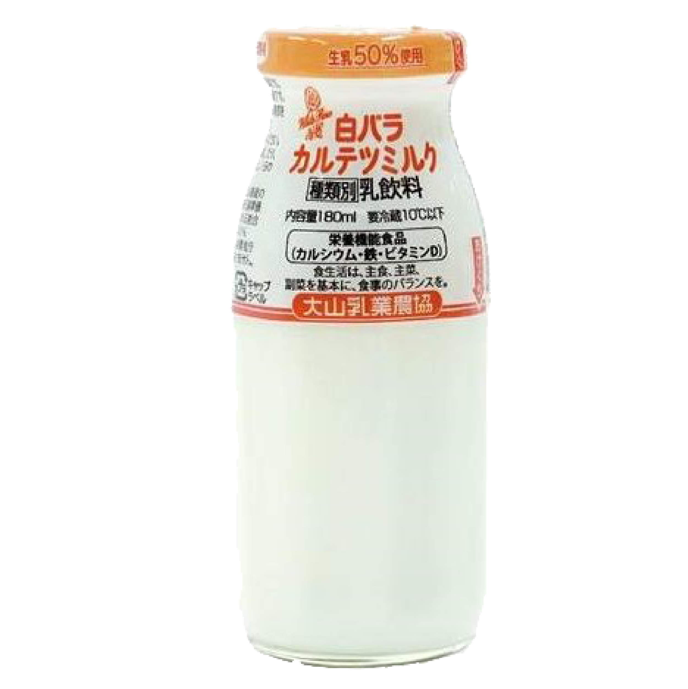
白バラカルテツミルク
（宅配専用）
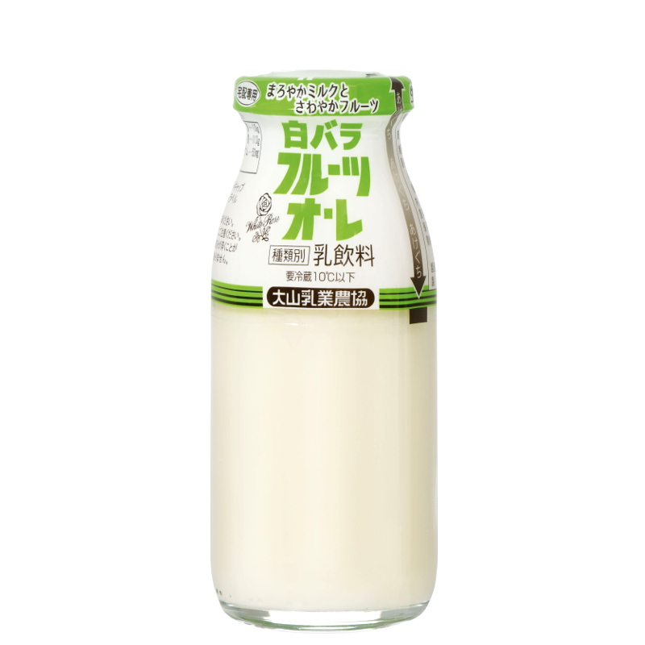
白バラフルーツオ・レ
（宅配専用）
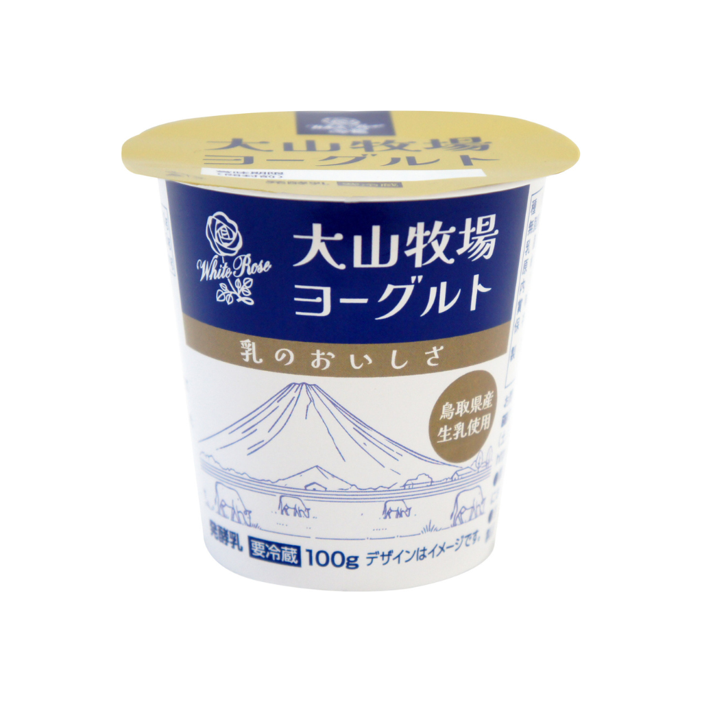
大山牧場ヨーグルト
（宅配専用）
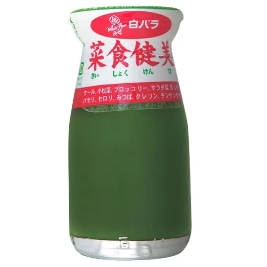
白バラ菜食健美
（宅配専用）
蒜山ジャージー牛乳
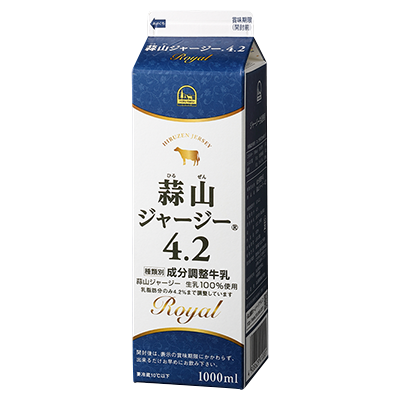
蒜山ジャージー4.2
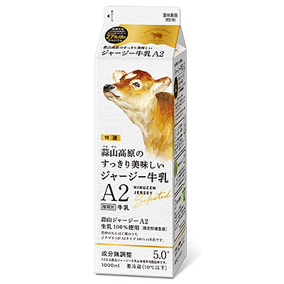
蒜山高原の
すっきり美味しい
ジャージー牛乳A2
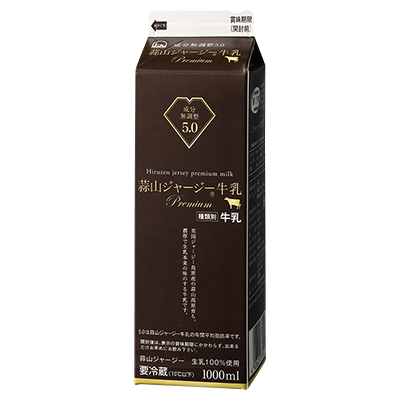
蒜山ジャージー牛乳
プレミアム
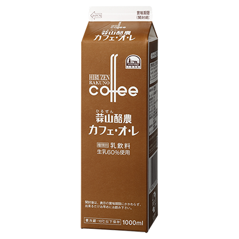
蒜山酪農
カフェ・オ・レ
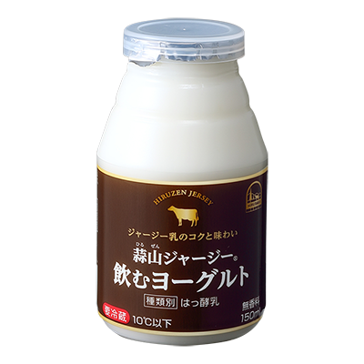
蒜山ジャージー
飲むヨーグルト
森永乳業
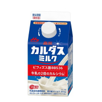
森永カルダスミルク
（宅配専用）
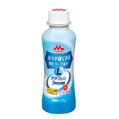
カラダ強くする
飲むヨーグルト
（宅配専用）
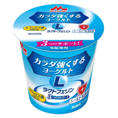
カラダ強くする
ヨーグルト
（宅配専用）
明治乳業
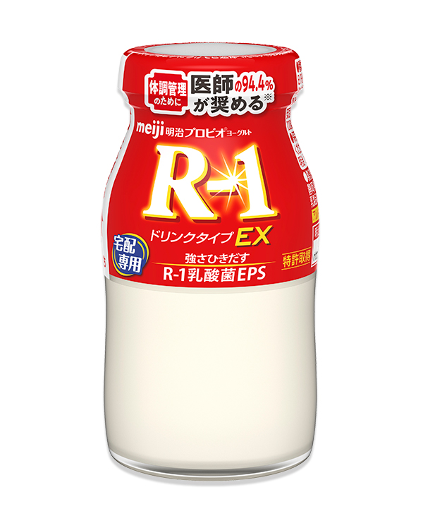
明治プロビオヨーグルト
R-1ドリンクタイプ
（宅配専用）
遠藤青汁
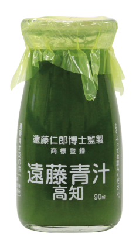
遠藤青汁
（宅配専用）
配達の最低本数については
180ml：週2本
500ml以上：週1本
から配達できます。